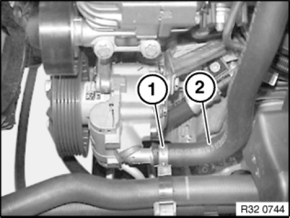
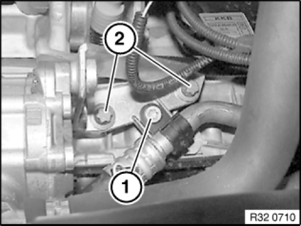
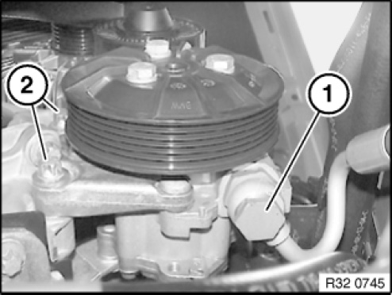

<!DOCTYPE html>
<html>
  <head>
    <title>32 41 060 Removing and Installing or Replacing Hydraulic Steering Vane Pump — 2011 BMW 128i Coupe (E82) L6-3.0L (N52K) Service Manual | Operation CHARM</title>
    <meta name='description' content="Detailed repair manual for the 2011 BMW 128i Coupe (E82) L6-3.0L (N52K).">
    <link rel='stylesheet' href="../style.css">
    <meta name='viewport' content='width=device-width, initial-scale=1.0' />
  </head>
  <body>
    <div class='theme-colors header'>
      <div class='branding'><b>Operation CHARM</b>: Car repair manuals for everyone.</div>
<div class=breadcrumbs><a class='breadcrumb-part' href="../">Home</a> <b>&gt;&gt;</b> <a class='breadcrumb-part' href="../BMW/">BMW</a> <b>&gt;&gt;</b> <a class='breadcrumb-part' href="../BMW/2011/">2011</a> <b>&gt;&gt;</b> <a class='breadcrumb-part' href="../index.html">128i Coupe (E82) L6-3.0L (N52K)</a> <b>&gt;&gt;</b> <a class='breadcrumb-part' href="0.html">Repair and Diagnosis</a> <b>&gt;&gt;</b> <a class='breadcrumb-part' href="0.html#Steering%20and%20Suspension/">Steering and Suspension</a> <b>&gt;&gt;</b> <a class='breadcrumb-part' href="0.html#Steering%20and%20Suspension/Steering/">Steering</a> <b>&gt;&gt;</b> <a class='breadcrumb-part' href="0.html#Steering%20and%20Suspension/Steering/Power%20Steering/">Power Steering</a> <b>&gt;&gt;</b> <a class='breadcrumb-part' href="1732.html">Power Steering Pump</a> <b>&gt;&gt;</b> <a class='breadcrumb-part' href="1732.html#Service%20and%20Repair/">Service and Repair</a> <b>&gt;&gt;</b> <a class='breadcrumb-part' href="11116.html">32 41 060 Removing and Installing or Replacing Hydraulic Steering Vane Pump</a></div></div>
<div class="theme-colors floaty-message lemon-message">
  <b style="font-size: 1.5em; color: gold">Manuals through 2025 now available!</b>
  <br><br>
  Our trusted friends have launched a new website named LEMON, which has newer manuals. It also contains all the CHARM manuals.
  <br><br>
  LEMON is the spiritual successor to  CHARM, I recommend you try it!
  <br><br>
  Link: <a style='white-space: nowrap' href="../missing-page">lemon-manuals.la</a> or <a style='white-space: nowrap' href="../missing-page">lemon-manuals.org.ua</a>
  <br><br>
  (Some people have issue connecting. LEMON is investigating. For now, use Firefox or change your DNS server)
  <br><br>
  Or, hide this message: <a href="../missing-page">temporarily</a> or <a href="../missing-page">permanently</a>
</div>
<div class='main'>
<h1>32 41 060 Removing and Installing or Replacing Hydraulic Steering Vane Pump</h1><br><br><b>32 41 060 Removing and installing or replacing hydraulic <a href="0.html#Steering%20and%20Suspension/Steering/">steering</a> vane pump (N51, N52, N53)</b><br><br><br><div class='oxe-image'></div><br><br><br><br><br><b>WARNING:</b><br>Danger of poisoning if oil is ingested/absorbed through the skin.<br>Risk of injury if oil comes into contact with eyes and skin.<br><br><b>IMPORTANT:</b><br>Adhere to the utmost cleanliness. Do not allow any dirt to enter the hydraulic system.<br>Close off line connections with seal plugs.<br><br><br><div class='oxe-image'></div><br><br><br><br><br><b>IMPORTANT:</b><br>Aluminium magnesium materials.<br>No steel screws/bolts may be used due to the threat of electrochemical corrosion.<br>A magnesium crankcase requires aluminium screws/bolts exclusively.<br>Aluminium screws/bolts must be replaced each time they are released.<br>The end faces of aluminium screws/bolts are painted blue for the purposes of reliable identification.<br>Jointing torque and angle of rotation must be observed without fail (risk of damage).<br><br><br><div class='oxe-image'></div><br><br><br><br><br><b>Recycling:</b><br>Catch and dispose of hydraulic fluid in a suitable collecting vessel.<br>Observe country-specific waste disposal regulations<br><br><br><div class='oxe-image'></div><br><br><br><br><br><b>Necessary preliminary tasks:</b><br><span class='indent-2'>&#09;</span>-<span class='indent-5'>&#09;</span>Draw off and dispose of hydraulic fluid from oil reservoir<br><span class='indent-2'>&#09;</span>-<span class='indent-5'>&#09;</span>Remove intake silencer housing<br><span class='indent-2'>&#09;</span>-<span class='indent-5'>&#09;</span>Replacement: Remove belt pulley<br><span class='indent-2'>&#09;</span>-<span class='indent-5'>&#09;</span>Remove front underbody protection<br><span class='indent-2'>&#09;</span>-<span class='indent-5'>&#09;</span>E8x only: Remove radiator seal<br><br><br><div class='oxe-image'></div><br><br><br><br><br>Release hose clamp (1) and detach intake pipe (2) from vane pump.<br><br>Installation note:<br>Markings on intake pipe and vane pump connection must match up.<br><br><br><div class='oxe-image'></div><br><br><br><br><br>Release bolt (1) and remove bracket with refrigerant line.<br>Unfasten screws (2).<br><br>Installation note:<br>Replace aluminium screws.<br>Observe screwing sequence.<br>Tightening torque 32 41 6AZ<br><br><br><div class='oxe-image'></div><br><br><br><br><br>Release banjo bolt (1) and disconnect pressure line.<br><br>Installation note:<br>Replace all sealing rings (D).<br>Make sure pressure line is laid without tension and with sufficient spacing to adjoining components.<br>Tightening torque 32 41 8AZ.<br><br>Release bolts (2) and remove vane pump towards bottom.<br><br>Installation note:<br>Replace aluminium screws.<br>Observe screwing sequence.<br><br><br><div class='oxe-image'></div><br><br><br><br><br><b>Screwing sequence:</b><br><span class='indent-2'>&#09;</span>1.<span class='indent-5'>&#09;</span>Secure vane pump with screws<br><span class='indent-2'>&#09;</span>2.<span class='indent-5'>&#09;</span>Tighten side screws to 2 Nm<br><span class='indent-2'>&#09;</span>3.<span class='indent-5'>&#09;</span>Tighten front screws to 2 Nm<br><span class='indent-2'>&#09;</span>4.<span class='indent-5'>&#09;</span>Tighten down front screws to jointing torque and angle of rotation<br><span class='indent-5'>&#09;</span>Tightening torque 32 41 6AZ.<br><span class='indent-2'>&#09;</span>5.<span class='indent-5'>&#09;</span>Release screws at side and check bolting points for gap freedom<br><span class='indent-2'>&#09;</span>6.<span class='indent-5'>&#09;</span>Tighten down side screws to jointing torque and angle of rotation<br><span class='indent-5'>&#09;</span>Tightening torque 32 41 6AZ.<br><br><br><div class='oxe-image'></div><br><br><br><br><br><b>After installation:</b><br><span class='indent-2'>&#09;</span>-<span class='indent-5'>&#09;</span>Fill and bleed hydraulic system<br><span class='indent-2'>&#09;</span>-<span class='indent-5'>&#09;</span>Check line connections for leak tightness<br><br><br><h3>�\�:</h3><div class='oxe-image'></div><br><br><br><br><br><h3>���:</h3><div class='oxe-image'></div><br><br><br><br><br><h3>G�:</h3><div class='oxe-image'></div><br><br><br><br><br><h3>��:</h3><div class='oxe-image'></div><br><br><br><br><br><h3>�s�:</h3><div class='oxe-image'></div><br><br><br><br><br><h3>jѬ:</h3><div class='oxe-image'></div><br><br><br></div>
<div class="theme-colors footer">
  <i>pro multis</i> · <a href="../about.html">About Operation CHARM</a>
</div>
<script src="../script.js"></script>
</body>
</html>
